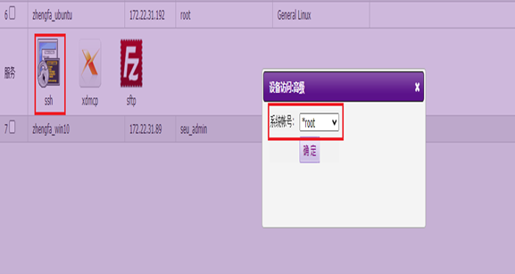
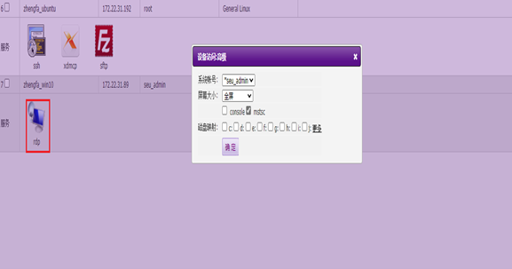
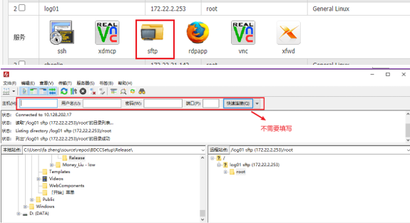
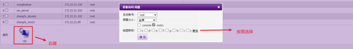
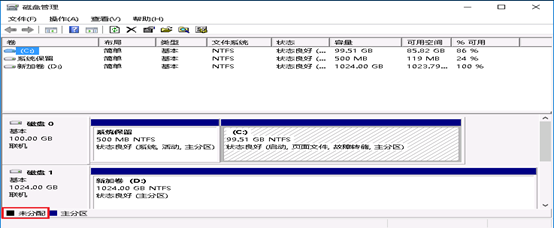

三、云平台使用
Contents
三、云平台使用#
提示
云平台使用Zstack私有云，支持创建Windows、Linux系统主机。
1. 登录#
Linux云主机
第一次登录右键单击SSH图标，选择预置的系统账号 (如果后续自行修改密码，请选择any登录，然后输入用户名和密码)。
Windows云主机
第一次登录右键单击rdp图标，选择预置的系统账号 (如果后续自行修改密码，请选择any登录，然后输入用户名和密码)。
2. 文件传输#
Linux云主机
Linux虚拟机点击sftp图标，自动打开filezilla并连接虚拟机。
Windows云主机
Windows虚拟机右键rdp图标后自行选择本地磁盘进行映射。
2. 磁盘挂载#
Linux云主机
查看硬盘状况
> sudo fdisk -l
注意要添加sudo命令，否则查看不到硬盘信息。如果有多块硬盘就可以看到/dev/sda、/dev/sdb、/dev/sdc等等
格式化分区
> sudo mkfs -t ext4 /dev/sda（要格式化的磁盘）
注意不能格式化扩展分区
挂载
创建挂载点，就是新建一个目录
> mkdir ~/disk
挂载
> sudo mount /dev/sda ~/disk（挂载目录）
df -h命令查看是否挂载成功
提示
这种挂载方式重启后会失效，重启自动挂载请自行百度
Windows云主机
打开磁盘管理，找到未分配的磁盘为其分配磁盘分区即可。
